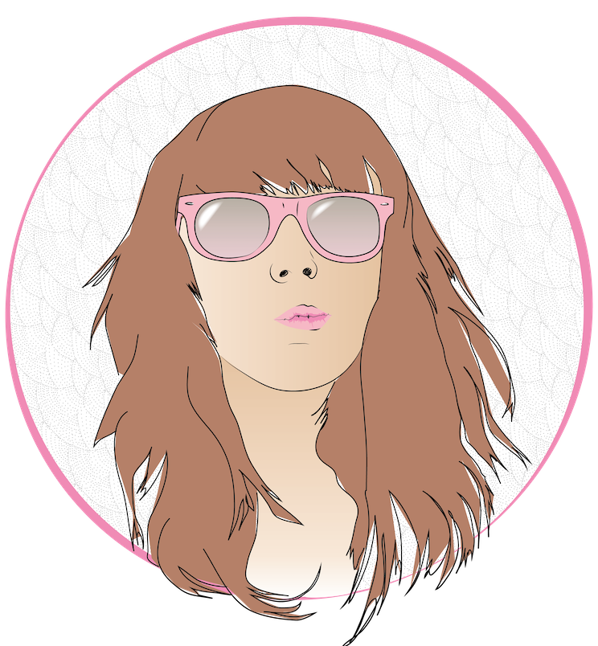
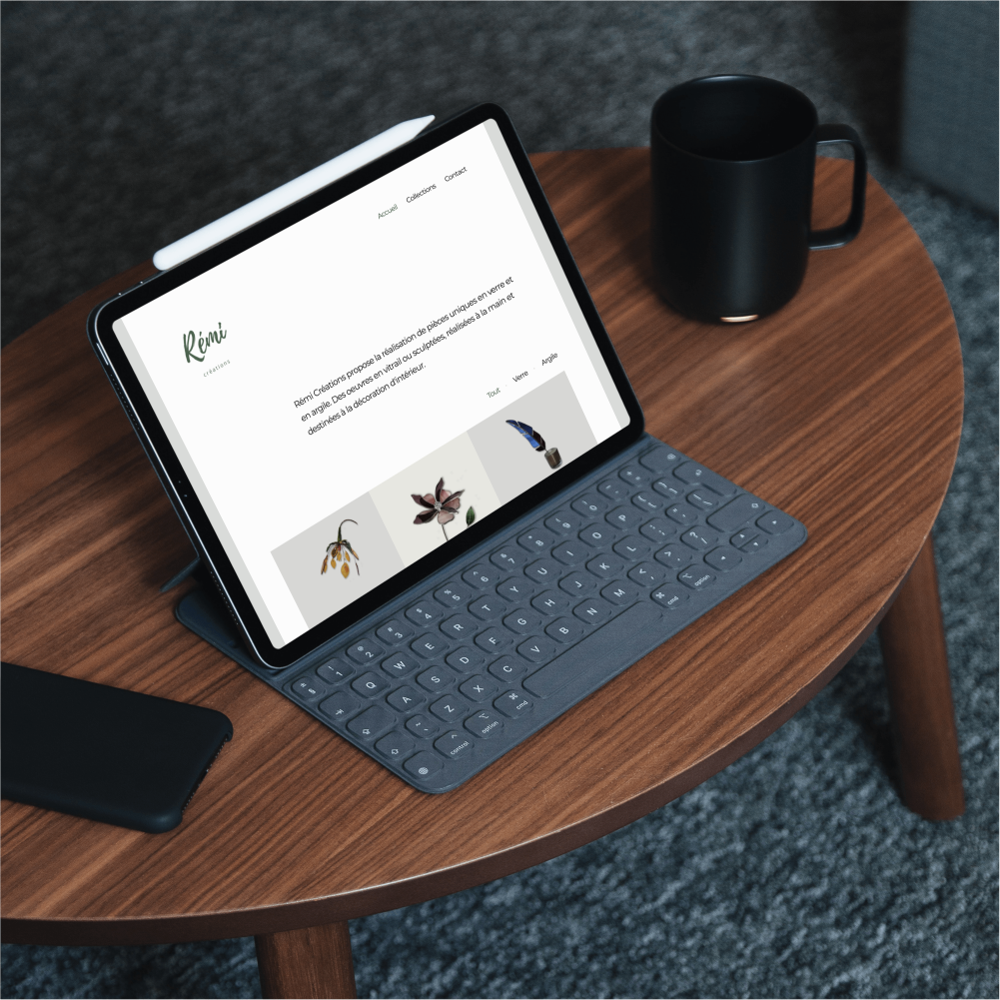
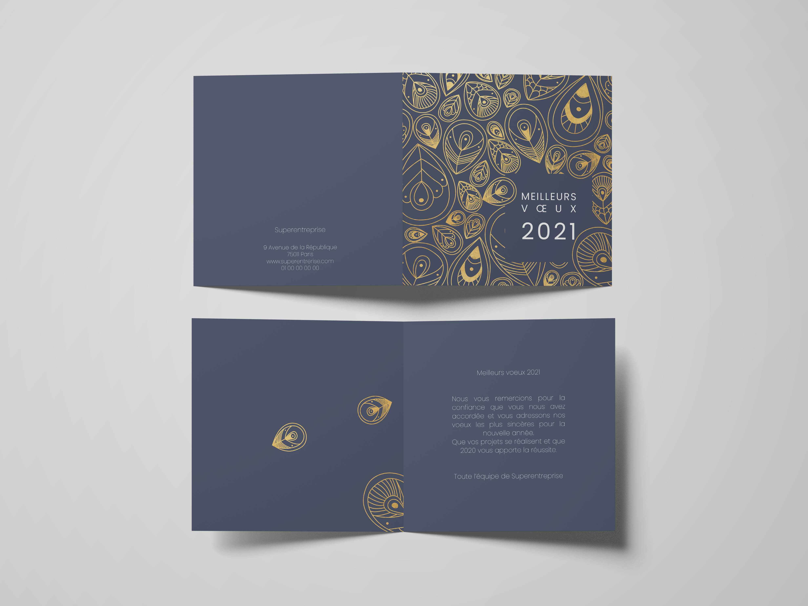

Conceptrice d'application web | intégratrice web | UX designer
Les Ateliers NX
Maquette interactive Figma réalisée pour Les Ateliers NX. L'objectif était de faciliter les échanges entre particuliers et professionnels avant la validation de devis ainsi que de gérer le suivi des devis et des factures.

Autoportrait
Réalisation personnelle. Illustration d’un autoportrait grâce à Adobe Illustrator.

Rémi Créations
Site vitrine réalisé avec Middleman pour un artiste verrier.
Exercice de graphisme pour PopCarte. Réalisation d'un faire-part de mariage en utilisant du blanc, de la texture et du doré

PopCarte
Exercice de graphisme pour PopCarte. Réalisation d'une carte de voeux sur le thème du paon. Création d'un pattern irrégulier avec des couleurs foncées et une touche de dorée.
outils.
Ruby on Rails
Sketch / Figma
Adobe Photoshop
Adobe Illustrator
Adobe InDesign
HTML
CSS
Javascript
compétences.
UX / UI
Design web
Développement front-end
Développement fullstack
WordPress
expériences.
2012 / 2018 - Chargée de création graphique (Métropole du Grand Nancy)
2018 - Certification Concepteur d’application web (Le Wagon)
depuis 2019 - Conceptrice d'application web freelance